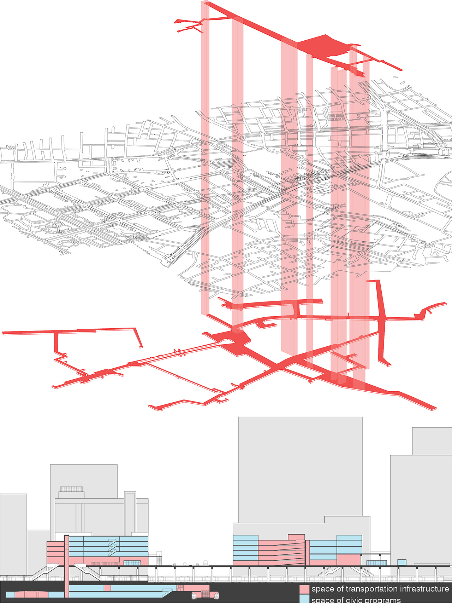

MEGASTRUCTURAL PROCESS
The Shaping of Shinjuku Station
From modernists’ ideological urban planning models to the postwar movements of megastructure, architects had been chasing for an urbanism
that can be interpreted and manipulated within the architectural dimension. However, their heroic ideologies, as criticized by Reyner Banham (1976),
eventually evolved into rigid orders that architects themselves could not understand or manage. On the other hand, infrastructure provides perceivable
connections between architecture and urbanism. In 1999, Stan Allen brought his proposition of an infrastructural urbanism, under which infrastructure is
seen as a medium for architects to interpret an urban process and to contribute through design intervention.
In the megacity of Tokyo, a train station is considered the most vital piece of infrastructure in a neighborhood as it connects the neighborhood
to Tokyo’s highly developed urban railway system which most people use for daily commuting. As the world’s busiest train station with a daily
average of 3.64 million passengers, Shinjuku Station can be understood from an architectural and urbanist perspective as an expanding ‘urban thing’
which generates an urban process upon infrastructural space by defining, creating, and modifying the urban structure of Shinjuku area.
This research evolves from my 2018 course project for the Contemporary Urbanism Proseminar at MIT.
[Instructor: Prof. Rania Ghosn, MIT Architecture]
Shinjuku Station as a Multiplayer Game
Tokyo’s thriving urban railway network consists of multiple public and private transit services. Throughout the modern history of railway developments with unsettling political
and social interplays, Shinjuku attracted various transit stakeholders for intersecting socio-economic activities. While the Great Kanto Earthquake in 1923 and
the relocation of Tokyo Metropolitan government to Shinjuku in 1991 marked significant transformations of the area, the expansions of Shinjuku Station resemble a multiplayer game
with national railway system, municipal transit service, and private corporations joining at different times.
This process not only shapes a major transportation node but also contributes to a unique physical form to the station. Instead of a monumental masterplan,
Shinjuku Station generates a loosely integrated megastructure. While the form seems arbitrary from an architectural perspective, the flexible arrangement for the
sake of expansion demonstrated the power of urban infrastructure for tactical improvisations under an overall strategic mechanism.

An Underground City
Instead of a spatial order imposed by masterplan like architect Fumihiko Maki’s Metabolist vision of Shinjuku development in 1962, Shinjuku Station advanced its multiplayer mode of development in progressive expansions and created its own urban form upon infrastructural space. One of the significant components is an underground city that spans from the station to the hinterland of Shinjuku area. It consists of networked tunnels with aligned commercials built by a collaborative force between transit companies and commercial businesses. In response to Tokyo's drastic economic changes, tunnels built in different eras reflect the temporal economic conditions on their physical forms.
The underground city
 An underground street in Shinjuku-Ni-Chome
An underground street in Shinjuku-Ni-Chome
An Elevated City
In addition to the underground city, Shinjuku Station is taking further steps to build layers of infrastructural space above the ground, informing a growing elevated city. In 2016, JR East completed an extension of the station in collaboration with the Ministry of Construction. The project incorporates an enormous artificial ground platform spanning above railways while connecting to transit terminals and multiple office towers. With increasing pedestrian traffics, the platform is becoming a new urban space with thriving public life supported by numerous small-scale commercials and cultural amenities.
An emerging elevated City
As Shinjuku Station sequentially expands and integrates into the urban fabrics, it generates an urban process in which transportation infrastructure and civic programs intersect on both horizontal and vertical layers. While the space and structures can be interpreted from an architectural perspective, the process happens under a ‘multiplayer’ mode with collective forces that intervene in economic, political, and social dimensions. The station demonstrates a megastructural process for architects to understand the shaping of city and find inspirations for design interventions.
